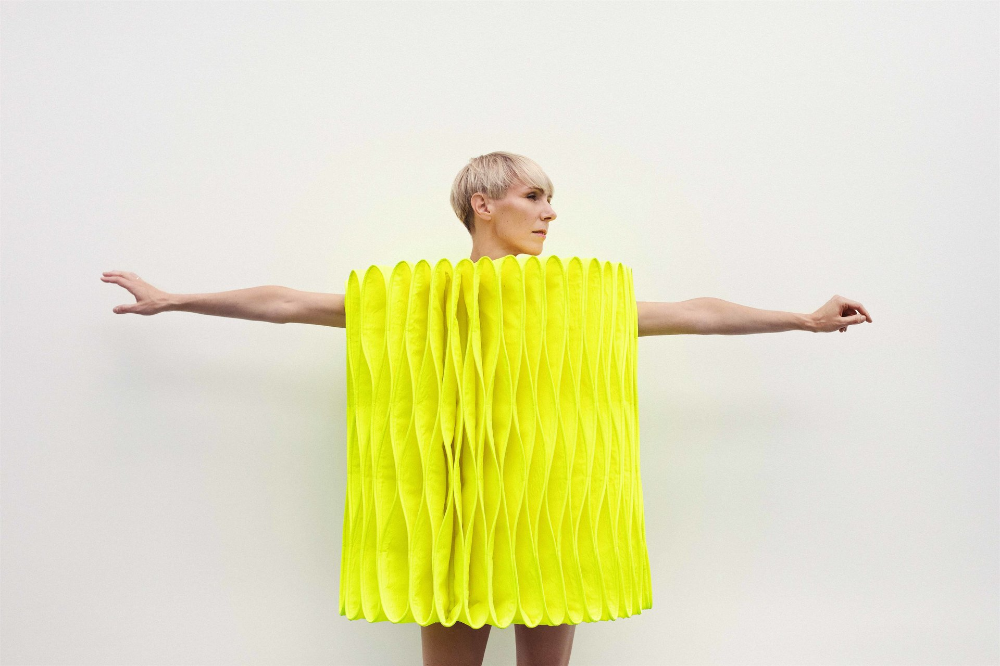
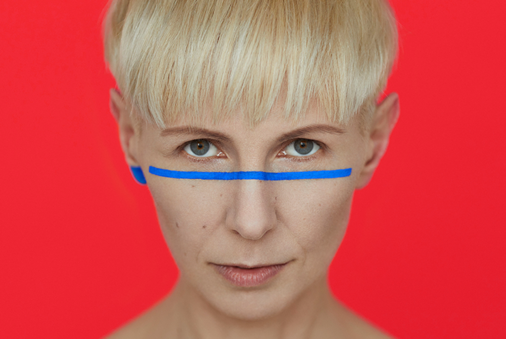

Muzika, kelianti klausimus ir pateikianti atsakymus. Švelni melodijų melancholija ir subtilūs akcentai dainų tekstuose - dainų autorės ir atlikėjos Giedrės vizitinė kortelė. Ar tai būtų pop, elektronikos ar džiazo muzika, Giedrė visada išlieka ištikima savitam braižui ir tuo pačiu klausytojui palieka jausmą, jog viskas kurta asmeniškai jam. Padovanokite sau įsimintiną vakarą, po kurio ne vienas pagalvosite - juk tai apie mane.>
Muzika skambės akompanuojant pianistui Andrejui Polevikovui.
JPG nuotraukos
PNG nuotraukos
